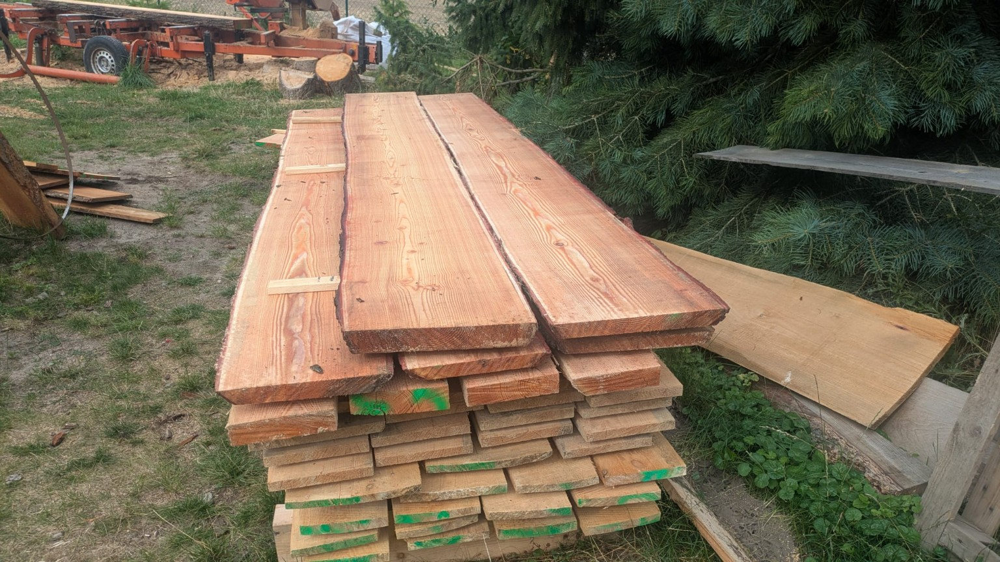
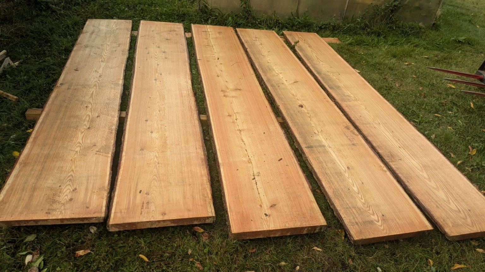
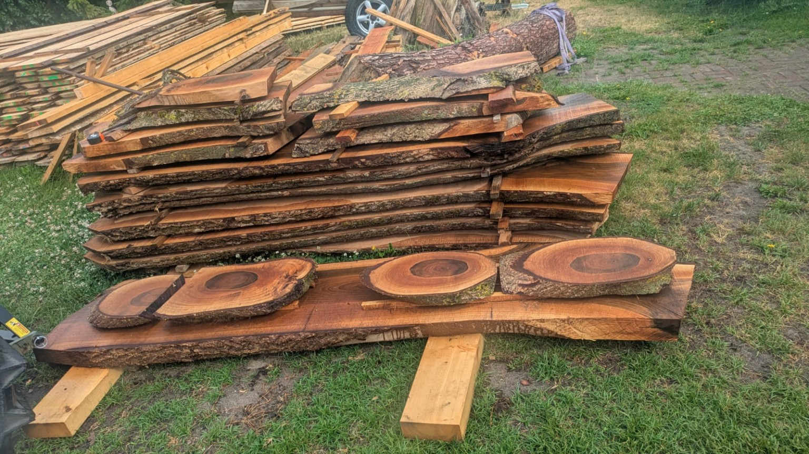
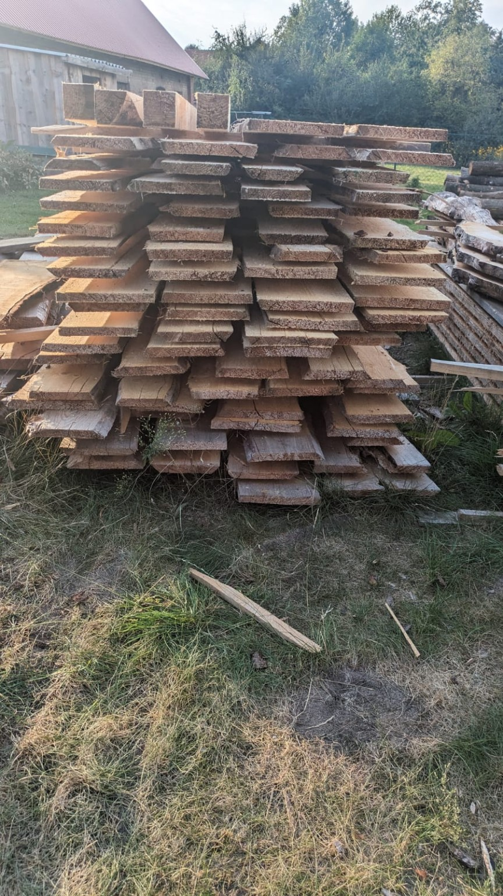
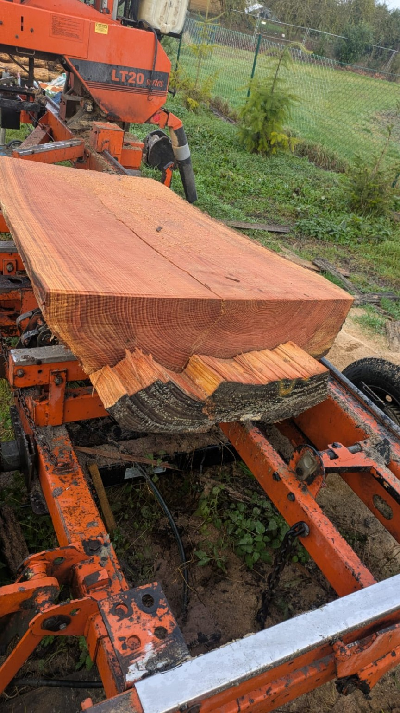
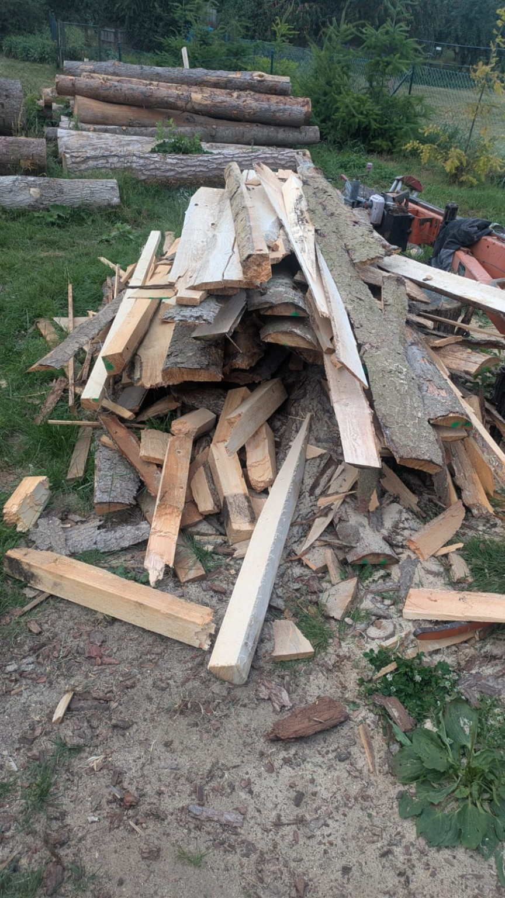

Bau- und Schnittholz
Maßgefertigtes Bauholz in Lärche, Fichte und Kiefer für dein Bauvorhaben.
Weitere Bilder ansehen →Sägewerk aus der Region
Bau- und Schnittholz, Lohnschnitt, Tischplatten, Hobeln und Fräsen – persönlich, flexibel und aus einer Hand.
Holz ist unsere Leidenschaft
In unserem Sägewerk verarbeiten wir heimisches Holz zuverlässig und nach deinen Anforderungen. Von einzelnen Bohlen bis zum kompletten Bauholzauftrag begleiten wir dein Projekt persönlich.
Verarbeitet werden unter anderem Fichte, Kiefer, Tanne, Lärche, Eiche und Esche.
Mehr über den BetriebWas wir anbieten
Individuelle Holzprodukte und zuverlässige Bearbeitung für private, landwirtschaftliche und gewerbliche Projekte.

Maßgefertigtes Bauholz in Lärche, Fichte und Kiefer für dein Bauvorhaben.
Weitere Bilder ansehen →
Massive Tischplatten aus Eiche und Esche. Weitere Holzarten auf Anfrage.
Weitere Bilder ansehen →
Wir schneiden dein eigenes Rundholz nach individuellen Maßen und Anforderungen ein.
Weitere Bilder ansehen →
Bauholz nach Maß – individuell eingeschnitten für dein Bauvorhaben.
Weitere Bilder ansehen →
Fachgerechter Einschnitt und sorgfältige Lagerung für eine natürliche Holztrocknung.
Weitere Bilder ansehen →
Weiterverarbeitung von Schnittholz nach Wunsch – für saubere Oberflächen und passende Abmessungen.
Weitere Bilder ansehen →
Schwarten und Restholz als Brennholz sowie Sägemehl und Hobelspäne – auf Anfrage erhältlich.
Weitere Bilder ansehen →
Auf Wunsch liefern wir Schnittholz und Bestellungen direkt zu dir – auch größere Mengen und individuelle Abmessungen.
Weitere Bilder ansehen →
Natürlich und individuell
Jede Bohle ist ein Unikat. Maserung, Farbe und Form machen Holz zu einem lebendigen Werkstoff. Wir beraten dich bei der Auswahl und schneiden das Material passend zu deinem Vorhaben zu.
Holzart anklicken, um eine Beispielansicht zu öffnen.
Projekt besprechenBekannt aus dem Nordkurier
Der Nordkurier hat über Chris Köppen, seine Selbstständigkeit und den Weg zum eigenen Sägewerk berichtet.
Zeitungsartikel lesen ↗
Alles auf einen Blick
Öffne den Flyer in einer druckfreundlichen Ansicht oder lade die Bilddatei direkt herunter.
So läuft es ab
Ruf an, schreib per WhatsApp oder fülle die Projektanfrage aus und schildere kurz, was du brauchst.
Holzart, Maße, Menge, Bearbeitung und Abholung oder Lieferung werden persönlich besprochen.
Das Holz wird passend zum Auftrag zugeschnitten und für dich bereitgestellt.
Direkt anfragen
Maße, Holzart und Wunsch kurz eintragen. Deine Projektanfrage wird direkt über Formspree versendet.
Kundenstimmen
Holzverarbeitung Köppen wird im Google-Unternehmensprofil aktuell mit 5,0 Sternen bei 4 Rezensionen angezeigt.
Google-Bewertungen ansehen ↗Partner im Holzhandwerk
Holzverarbeitung Köppen sorgt für den fachgerechten Einschnitt und die passende Aufbereitung des Holzes. Wenn daraus anschließend etwas Besonderes entstehen soll, geht es weiter zu Schröder Holzarbeiten – individuelle Möbel, Terrassen, Zäune, Treppen, Restaurierungen und Sonderanfertigungen aus Holz.
Zwei Betriebe. Ein Werkstoff. Viele Möglichkeiten.
Zu Schröder Holzarbeiten →Direkter Kontakt
Für Preise, Verfügbarkeit und individuelle Maße am besten kurz anrufen oder eine WhatsApp-Nachricht schicken.
Anfahrt
Loitzer Straße 9, 17094 Burg Stargard OT Teschendorf
Beispielansicht
Holz ist ein Naturprodukt – Farbe, Maserung und Struktur können von Stück zu Stück deutlich variieren.
Weiteres Referenzfoto ansehen ↗